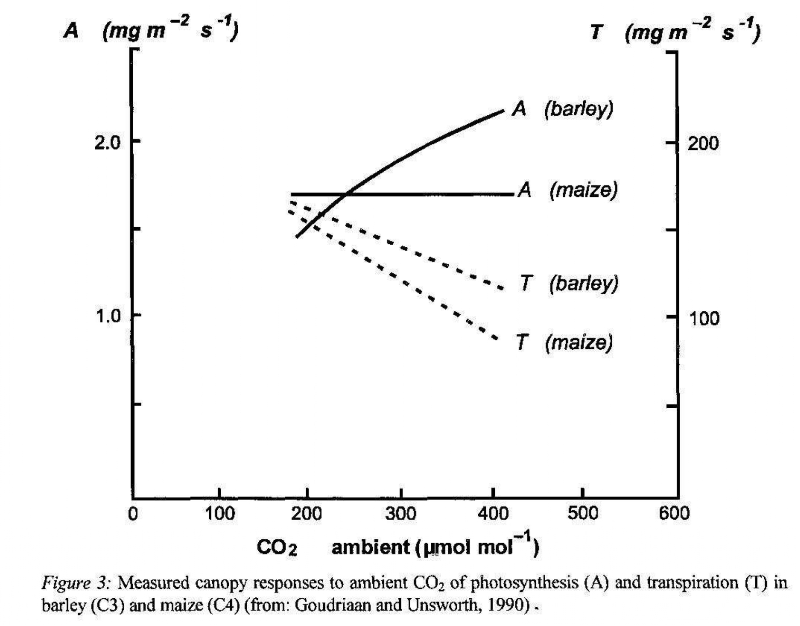

12.1 Tutkimustyypit
Tarkastellaan ensin erilaisia tutkimustyyppejä yleisellä tasolla. Erilaiset tutkimukset voidaan karkeasti jakaa neljään eri luokkaan: kuvaileva, vertaileva, kokeellinen ja havainnoiva tutkimus.
- Kuvaileva tutkimus
- Tarkoituksena on kuvata jonkin ilmiön, tilanteen tai tapahtuman luonnetta, yleisyyttä, historiallista kehitystä tai muita tunnuspiirteitä mahdollisimman todenmukaisesti ja tarkasti.
- Keskeistä tiedon lisääminen ja pyrkimys vastata kysymyksiin mitä, millainen tai miten.
- Yleisesti ottaen kuvaileva tilastollinen tutkimus perustuu aineistosta lasketuille tunnusluvuille, jotka kuvaavat aineiston ominaisuuksia. Esimerkkeinä toimivat keskiarvon lisäksi sen kaltaiset keskimääräistä havaintoa mittaavat suureet kuten mediaani ja moodi tai vaihtelua kuvaavat eri muuttujien vaihteluvälit ja keskihajonnat (ks. luku @ref{luku9}.
- Saadakseen luotettavia tunnuslukuja, tulee otoksen olla edustava ja havaintojen luotettavia ja päteviä eli saatujen mittausten pitää kuvata kohteena olevaa ilmiötä ilman virheitä.
- Kuvailevassa tutkimuksessa ei tutkita muuttujien välisiä yhteyksiä tai riippuvuksia eikä täten yleensä tehdä jakoa selittäviin ja selitettäviin muuttujiin vaan muuttujat ovat asetelmallisesti samantasoisia.
- Vastaavasti kuvailevassa tutkimuksessa ei välttämättä testata hypoteeseja, ei tehdä ennusteita, ei anneta selityksiä tai pohdita seurauksia: kyseessä on vain aineiston kuvailua ilman sen merkityksellisempää sisältöä kuten havaintojen taustalla olevien ilmiöiden tutkimista tai perusjoukon ominaisuuksien päättelyä otoksen perusteella.
- Vertaileva tutkimus
- Vertaileva tutkimus voidaan jakaa kahteen luokkaan
- Ryhmäeroja selittävään tutkimukseen
- Korrelaatiotutkimukseen
- Ryhmäeroja selittävässä tutkimuksessa pyritään selvittämään, mitkä tekijät liittyvät tutkittaviin ilmiöihin, jotka aiheuttavat ryhmissä ilmeneviä eroja.
- Korrelaatiotutkimuksissa pyritään löytämään ilmiöiden välisiä yhteyksiä tutkimalla kohdejoukkoa kokonaisuutena, jolloin mitattavien muuttujien joukkoon otetaan selittäviä muuttujia.
- Selittäviä muuttujia hyödynnetään molemmissa luokissa. Niiden avulla pyritään löytämään yhteyksiä verrattavien kohteiden välillä ja niiden voidaan ajatella olevan myös mahdollisia syitä selitettäville muuttujille, seurauksille.
- Syy-seuraussuhteita ei kuitenkaan vertailevassa tutkimuksessa pohdita, ts. vertaileva tutkimus ei ole suoranaisesti kiinnostunut kohteena olevien ilmiöiden/ryhmien vertailussa löydettyjen erojen syistä vaan mielenkiinnon kohteena on kys. erot itsessään.
- Vertailevaa tutkimusta tehdessä on tarpeen pohtia:
- Miksi jotakin tutkimuskohdetta vertaillaan eli mitä tutkimuskohteesta halutaan nimenomaan saada selville.
- Mitkä ja minkälaisia tilastoyksiköitä vertailuun kannattaa ottaa mukaan, jotta tutkimuksen tavoitteet saavutetaan.
- Tyypillistä se, että kontrolli on puutteellista ja ns. väliin tulevia muuttujia ei voida aina eliminoida.
- Tutkimuksessa on hyväksyttävä myös muuttujiin liittyvä luonnollinen vaihtelu.
- Vertaileva tutkimus voidaan jakaa kahteen luokkaan
- Kokeellinen tutkimus
- Tarkastellaan syy-seuraussuhteita sellaisissa olosuhteissa, joissa tutkija pystyy kontrolloimaan tutkimusyksikköihin vaikuttavia tekijöitä, eli nk. “käsittelytekijöitä”.
- Tavallisesti kokeellisella tutkimuksella viitataan sellaiseen tutkimukseen, jossa aineiston on kerätty valvotussa ja kontrolloidussa ympäristössä, kuten laboratoriossa tai sairaalan koehuoneissa, jotta mittaukset ja käsittelytekijät on tutkimuksen tekijän puolesta kontrolloitu ja täten halutunlaisia.
- Tutkimusasetelman kontrollointi vähentää mittauksiin ja käsittelytekijöihin liittyvien virhelähteiden mahdollisuuksia ja täten jättää vähemmän sijaa epäilyksille.
- Lisäksi tutkimuksen toistettavuus ja objektiivisuus paranevat, kun koejärjestelyt tehdään tarkasti ja huolellisesti.
- Kokeelliset tutkimukset tuottavat yleensä nopeammin riittävään näyttöön perustuvaa evidenssiä kuin havainnoivat tutkimukset.
- Kokeellinen tutkimusasetelma ei kuitenkaan ole mahdollinen kaikissa tilanteissa.
- Esimerkiksi erilaisten politiikkatoimien arvioimisessa olisi hyödyllistä, mikäli se voitaisiin satunnaisesti kohdistaa esimerkiksi vain osaan kansasta tai kunnista. Tällaisten kokeilujen ehdotukset ovat kuitenkin usein kaatuneet joko perustuslaillisiin ongelmiin tasavertaisesta kohtelusta tai muihin lainsäädännöllisiin ongelmiin tai niitä ei ole toteutettu riittävän hyvin, jotta asetelma riittäisi kokeelliseen analyysiin.26
- Kontrolloitujen kokeiden yleisenä kritiikkinä ja heikkoutena voidaan kuitenkin pitää niiden vähäistä yleistettävyyttä: liian pitkälle kontrolloidut ja pelkistetyt koeolosuhteet eivät toimi kaikkien tutkimuskysymysten kannalta yleistettävyyden osalta.
- Ihmiset käyttäytyvät eri tavalla laboratorio-olosuhteissa kuin normaalissa ympäristössä!
Esimerkki: kasvien kasvatus eri hiilidioksidipitoisuuksissa
- Hiilidioksidipitoisuuden kasvu tehostaa kasvien yhteyttämistä
- Kasvit eroavat toisistaan siinä, millä tavalla ne sitovat hiilidioksidia ilmasta yhteyttämistä varten \(\rightarrow\) muutokset vaikuttavat eri tavalla eri kasveihin
- Vaikuttaako ilmastonmuutos sadonmuodostukseen? Onko vaikutus suurempi joillain tietyillä kasveilla?

Kuvio 12.2: Hiilidioksidipitoisuuden kasvun vaikutus satomääriin.
Esimerkki: Lääketieteelliset kokeet
- Erään tappavan taudin hoitoon on kehitetty uusi lääke, jonka toivotaan parantavan enemmän potilaita kuin kauan käytössä ollut vanha lääke. Miten saadaan varmuus siitä, että uusi lääke on parempi kuin vanha lääke?
- Paranemistulosten vertailemiseksi järjestetään tilastollinen koe:
- Jaetaan joukko potilaita arpomalla kahteen ryhmään:
- Ryhmälle 1 annetaan uutta lääkettä.
- Ryhmälle 2 annetaan vanhaa lääkettä.
- Verrataan parantuneiden suhteellisia osuuksia ryhmissä 1 ja 2.
- Kokeen tavoitteena on tehdä kokeen tulosten perusteella yleisiä johtopäätöksiä uuden lääkkeen tehokkuudesta. Miten yhdestä kokeesta saadut tulokset voidaan yleistää koskemaan kaikkia tautia sairastavia potilaita?
- Kokeen tulokset voidaan yleistää, jos kokeessa uutta ja vanhaa lääkettä saavien potilaiden ryhmät ovat samankaltaisia kaikissa muissa suhteissa paitsi siinä, että niihin kohdistetaan kokeessa erilainen käsittely.
- Tällöin mahdolliset erot parantuneiden suhteellisissa osuuksissa on oltava seurausta erilaisista käsittelyistä.
- Kokeen kohteiden jakaminen ryhmiin arpomalla on ainoa menetelmä, joka mahdollistaa samankaltaisten ryhmien saamisen.
- Kokeen kohteiden jakamista erilaisen käsittelyn kohteiksi joutuviin ryhmiin arpomalla kutsutaan siis satunnaistamiseksi.
- Arvonnan käyttö ryhmiin jaossa merkitsee sitä, että koetulokset ovat satunnaisia seuraavassa mielessä: Jos arvontaa toistettaisiin, kokeesta saataisiin (suurella todennäköisyydellä) erilaiset ryhmäjaot.
- Kokeen tulokset voidaan yleistää, jos kokeessa uutta ja vanhaa lääkettä saavien potilaiden ryhmät ovat samankaltaisia kaikissa muissa suhteissa paitsi siinä, että niihin kohdistetaan kokeessa erilainen käsittely.
- Kysymyksiä:
- Miten yhdestä kokeesta saadut ja satunnaiset koetulokset voidaan yleistää koskemaan kaikkia ko. tautia sairastavia potilaita?
- Miten luotettava tällainen yleistys on?
- Vastauksia:
- Jos potilaiden jaossa ryhmiin on käytetty satunnaistamista, kokeen tuloksiin sisältyvälle epävarmuudelle ja satunnaisuudelle voidaan muodostaa tilastollinen malli, joka mahdollistaa sekä koetulosten yleistämisen että yleistyksen luotettavuuden arvioimisen.
- Yleistyksen luotettavuutta ei pystytä arvioimaan, ellei ryhmiin jaossa ole käytetty satunnaistamista.
- Tilastollisen kokeen suunnittelussa, toteutuksessa ja tulosten analysoinnissa sovelletaan mm. seuraavia tilastollisia menetelmiä: koesuunnittelu, estimointi ja testaus.
- Havainnoiva tutkimus
- Kuten edellä mainittiin, kokeellisia tutkimusasetelmia ei useinkaan ole mahdollista järjestää. Tällaisia kysymyksiä voidaan kuitenkin tutkia havainnoivassa tutkimuksessa, jossa syy-seuraussuhteita tarkastellaan tilanteissa, joissa tutkijalla ei ole välttämättä mitään kontrollia (tai syytä sille) tutkimusyksikköihin tai heihin vaikuttaviin muuttujiin (käsittelytekijöihin).
- Esimerkiksi tutkimusasetelmat, joissa tutkimuksen kohteena olevia yksiköitä (esim. ihmiset, kunnat, valtiot) ei voida satunnaistaa kuuluvaksi osaksi joukkoa, joka altistetaan jollekin käsittelylle.
- Tällöin tutkijan on tyydyttävä havainnoimaan sitä mitä tapahtuu luonnostaan tietyssä (mahdollisesti satunnaisesti poimitussa) tutkimusjoukossa tietyssä tilanteessa.
- Havainnoivan tutkimuksen aineistoa voidaan analysoida samoin menetelmin kuin kokeellisen tutkimuksenkin, mutta mitattujen tekijöiden vaikutusta ei voida erottaa kokonaisuudesta samalla tarkkuudella kuin kokeellisessa tutkimuksessa.
- Havainnoivan tutkimuksen tilastollinen teoria muodostuu periaatteista ja menetelmistä, joiden avulla aineiston tuottaman evidenssin painoarvoa voidaan arvioida mahdollisimman “puhtaasti”.
- Havainnoivan tutkimuksen edut
- Saadaan välitöntä ja suoraa tietoa yksilöiden, ryhmien ja organisaatioiden toiminnasta ja käyttäytymisestä.
- Tutkija voi havainnoida tutkittavia luonnollisessa ympäristössä.
- Sopii sekä määrällisen että laadullisen aineiston hankkimiseen.
- Erinomainen menetelmä muun muassa vuorovaikutuksen tutkimisessa, ja silloin kun tilanteet ovat vaikeasti ennakoitavia ja nopeasti muuttuvia.
- Sopii myös silloin, kun tutkittavilla on kielellisiä vaikeuksia (kuten lapset) tai kun halutaan saada selville sellaista tietoa, jota tutkittavat eivät halua suoraan kertoa tutkijalle.
- Havainnoivan tutkimuksen haitat
- Tutkija saattaa häiritä tilannetta tai muuttaa sen kulkua.
- Tutkija saattaa sitoutua emotionaalisesti tutkittavaan ryhmään tai tilanteeseen.
- Kuten edellä mainittiin, kokeellisia tutkimusasetelmia ei useinkaan ole mahdollista järjestää. Tällaisia kysymyksiä voidaan kuitenkin tutkia havainnoivassa tutkimuksessa, jossa syy-seuraussuhteita tarkastellaan tilanteissa, joissa tutkijalla ei ole välttämättä mitään kontrollia (tai syytä sille) tutkimusyksikköihin tai heihin vaikuttaviin muuttujiin (käsittelytekijöihin).
Esimerkki: raskauden keskeytyksen ja rintasyövän välinen kausaaliyhteys
- Kokeellinen asetelma: Poimitaan satunnaisesti \(n\) kappaletta raskaana olevia naisia ja heistä \(n_1\) kappaletta satunnaistetaan käsittelyryhmään (raskauden keskeytys) ja \(n_2\) kontrolliryhmään. Kaikki naiset käyvät muutaman seuraavan vuoden ajan syöpäseulonnoissa.
- Kokeelliseen asetelma ei selvästikään ole eettisistä syistä mahdollinen, eikä sitä olisi mahdollista suorittaa sokkoutettuna kokeena
- Aiheesta julkaistut tutkimukset aloittavat yleensä naisista, joille on jo tehty raskauden keskeytys
- Käsittelyryhmään kuuluminen ei siis ole tutkijan kontrollissa
Esimerkki: lääkityksen aiheuttama harvinainen sivuvaikutus
- Harvinaisen ilmiön tarkastelu satunnaistetulla kokeella on epäkäytännöllistä, sillä saattaa olla, että isossakaan tutkimusjoukossa sivuvaikutusta ei esiinny yhdelläkään tutkittavalla
- Havainnoiva tutkimus aloittaisi tässä tapauksessa etsimällä ensin sivuvaikutuksesta kärsivät potilaat ja sen jälkeen selvittäisi ketkä heistä ovat saaneet kyseistä lääkettä (ja saaneet sivuoireet lääkityksen aloittamisen jälkeen)